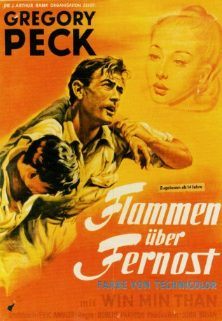
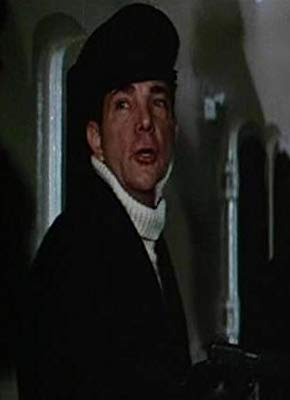

#10999 Flammen über Fernost
Alternativ: The Purple Plain (Englischer Titel)
 
 IMDB-Wertung: 6.6 / 10
IMDB-Wertung: 6.6 / 10  Metascore: 0
Metascore: 0 
Burma 1945, während des Zweiten Weltkriegs: Der Tod seiner Frau durch einen Bombenangriff in London hat Major Forrester verbittert. Das Leben hat für den waghalsigen Piloten keinen Sinn mehr. Unbarmherzig befehligt er eine Staffel Mosquito-Jagdbomber im Dschungel von Burma. Bei jedem Einsatz setzt er sein Leben und das Leben seiner Staffelkameraden aufs Spiel. Bei einem dieser Einsätze wird sein Beobachter verletzt. Forresters Einstellung und die Abgeschlossenheit der sonnenglühenden und undurchdringlichen Dschungelgebiete lastet schwer auf den Nerven der Männer. Der Kommandeur und der Arzt Dr. Harris befürchten, dass sich Forresters Verhalten auf die ganze Einheit auswirken könnte, wenn nicht bald etwas Entscheidendes geschieht.
Jahr: 1954
Dauer: 101 Minuten
FSK: 12
Land: England Studio: J. Arthur Rank FilmTonspuren: DD2.0 - ,
Untertitel:
Auflösung: 1080p (1488x1080) Größe: 7301 MB
Genre: Action, Drama, Abenteuer, Krieg
Regisseur: Robert Parrish
Drehbuch: H.E. Bates, Eric Ambler
Soundtrack: John Veale
Darsteller:
 Gregory Peck als Squadron Leader Bill Forrester
Gregory Peck als Squadron Leader Bill Forrester- Win Min Than als Anna
- Brenda de Banzie als Miss McNab
 Bernard Lee als Dr. Harris
Bernard Lee als Dr. Harris Maurice Denham als Blore
Maurice Denham als Blore- Lyndon Brook als Carrington
- Anthony Bushell als Group Captain Aldridge
- Josephine Griffin als Mrs. Bill Forrester
- Dorothy Alison als Nurse (uncredited)
-  Peter Arne als Flight Lieutenant (uncredited)
- Ram Gopal als Mr. Phang
- Ernest Blyth als Man Dancing at Wedding (uncredited)
- Kurt Christian als (uncredited)
- Jack McNaughton als Sgt. Ralph Brown (uncredited)
- Lane Meddick als Radio Operator (uncredited)
- Harold Siddons als Navigator Williams (uncredited)
- Mya Mya Spencer als Dorothy (uncredited)
- John A. Tinn als Burmese Jeweler (uncredited)
- Soo Ah Wong als Old Woman (uncredited)
Datei: X:\1950-1959\Flammen über Fernost (1954, FSK12, 1488x1080).mkv seit 16.04.2019
Festplatte: Gemischt-01+Anime
 Es gibt insgesamt 141 Filme in der Gruppe '1950-1959'
Es gibt insgesamt 141 Filme in der Gruppe '1950-1959'